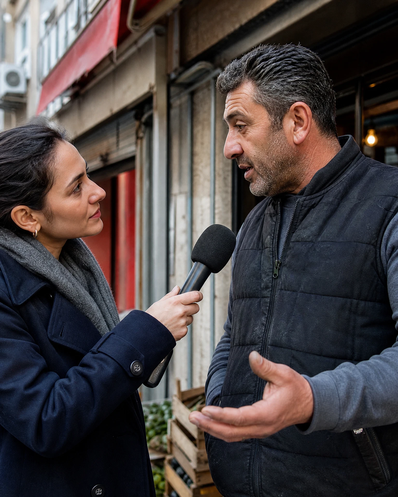
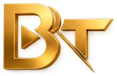
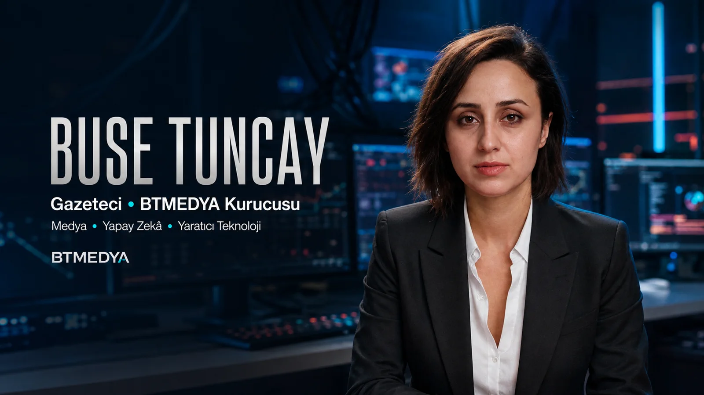
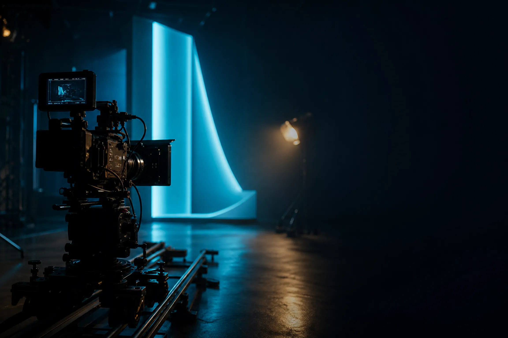
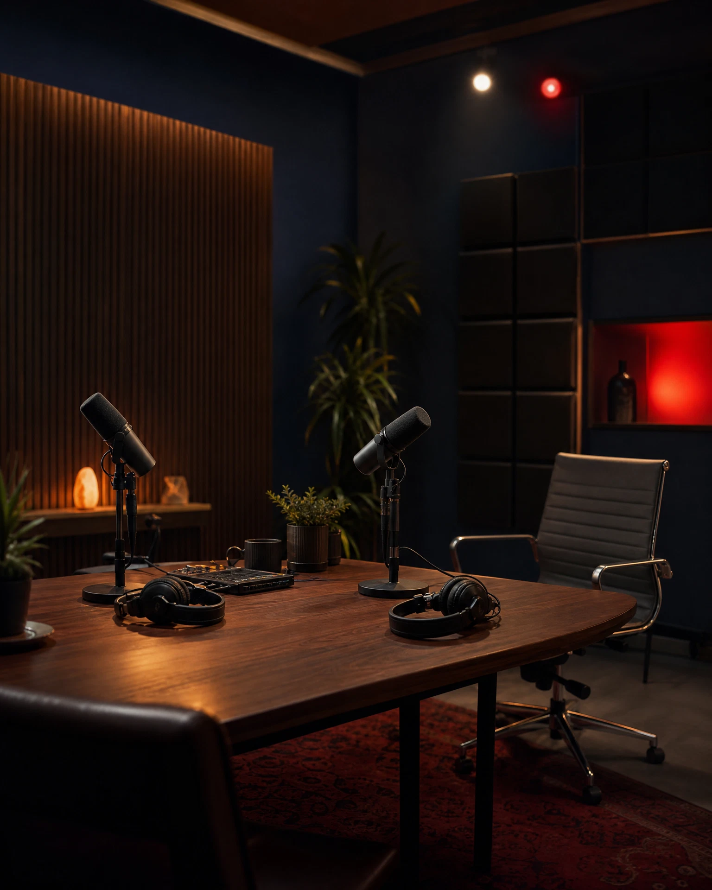
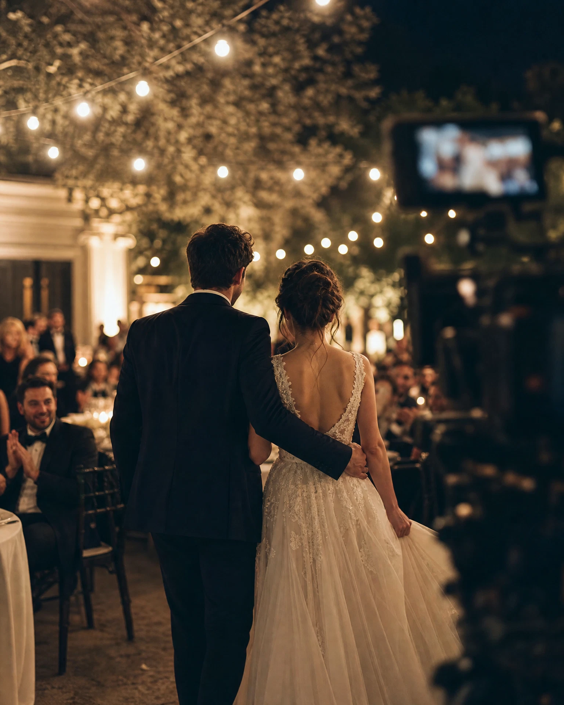
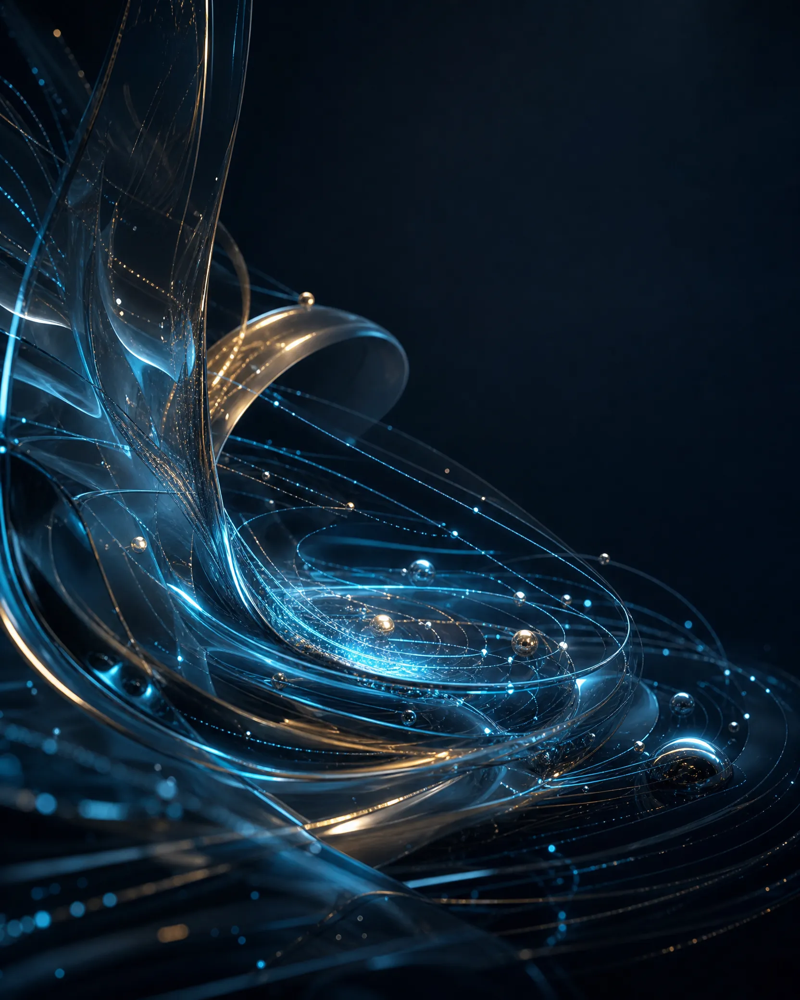

01
Konuşuyoruz
Ne istediğinizi anlatıyorsunuz. Bütçeyi ve tarihi ilk konuşmada söylüyoruz. Sonradan çıkan kalem yok.

BTMEDYA PROJEYİ ANLATHer şey bir kareyle başlar.
Haberi kovalayan el, kamerayı da tutuyor.
Arada tampon yok.
Fikir sizden. Kadraj bizden.
Haber, prodüksiyon ve yapay zekâ. Tek ekip, tek akış.
Haber, prodüksiyon ve yapay zekâ. Balıkesir'den, tek ekiple.
BTMEDYA'yı Buse Tuncay kurdu. Gazeteci. Sahada mikrofonu tutan da, kurguyu teslim eden de aynı kişi. Arada müşteri temsilcisi yok, brief kaybolmuyor, işin nerede olduğunu her zaman söyleyebilecek biri var.
BTMEDYA'yı daha yakından tanıyın →
AI ÜRETİMİ
Ne istediğinizi anlatıyorsunuz. Bütçeyi ve tarihi ilk konuşmada söylüyoruz. Sonradan çıkan kalem yok.

Saha, stüdyo ya da yapay zekâ. Hangisinin işinizi göreceğini biz söylüyoruz, hepsini birden satmıyoruz.

Söylediğimiz tarihte. Ham kayıtlar da sizin, master da.

AI ÜRETİMİ
AI ÜRETİMİ1 Ağustos 2026'da yürürlüğe giren Ticari Reklam ve Haksız Ticari Uygulamalar Yönetmeliği, reklamlarda yapay zekâ kullanımının açıkça belirtilmesini zorunlu kıldı. Biz bunu zorunluluk olduğu için değil, haber üreten bir ekip olduğumuz için zaten yapıyorduk. Sizin için ürettiğimiz her işte de aynısını yapıyoruz.
Yapay zekâ hızı veriyor. Neyin gerçek olduğunu söylemek bize kalıyor.
Ne değişti: tüketicinin kararını etkileyecek şekilde yapay zekâ kullanılan reklamlarda bu durum açıkça belirtilmek zorunda. Gerçek kişilerin yapay zekâ ile üretilmiş kopyalarının ürün tavsiye eder gibi gösterilmesi ise tamamen yasak.
KADRAJI BASILI TUTUP SÜRÜKLEYİN
Hayır. İlk konuşmada verdiğimiz rakam teslimde de aynı. Kapsam siz değiştirirseniz değişir, biz değiştirmeyiz.
Buse Tuncay ve BTMEDYA ekibi. Konuştuğunuz kişi işi yapan kişi.
Tarihi ilk gün veriyoruz. Gecikme olacaksa siz sormadan haber veriyoruz.
Kötü kullanıldığında duruyor. Biz yapay zekâyı prodüksiyon disipliniyle kullanıyoruz: kadraj, ışık, süreklilik ve kurgu insan işi. Nerede AI kullandığımızı da yazıyoruz.
Saha işleri Balıkesir ve çevresinde. Yapay zekâ, kurgu ve web işleri her yerden.
Ne yapmak istediğinizi yazın, aynı gün dönüş yapalım.